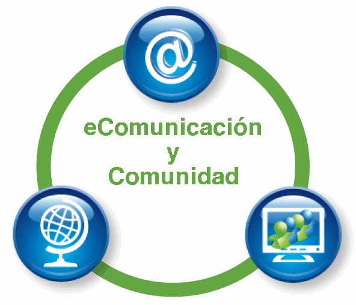
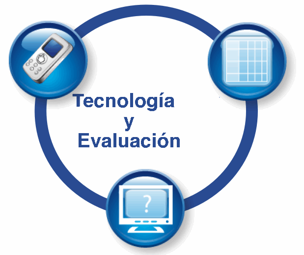

|
 |  |
 |
 |
 |
[Volver a la página principal del Rango de Uso] [Ver escenarios para Herramientas de Práctica Profesional Diaria]
Práctica Profesional Diaria: Incluye tecnologías que pueden ayudar a mejorar
actividades que son parte de la rutina diaria de clase tales como las actividades introductorias de un tema,
entregar trabajos de tareas para la casa y también tareas diarias
como el libro de calificaciones asistencia a clase. También incluye tecnologías para ayudar al desarrollo profesional
como evaluación por los pares, trabajo en red, grupos de estudio, prácticas reflexivas,
etc.
Tareas de Rutina del Estudiante [cursor sobre imagen para definición] |
Tareas de Rutina del Docente
[cursor sobre imagen para definición] |
Escenarios para Herramientas de Práctica Profesional
| Título (click en el título para ver el scenario) | Categorías contempladas en el escenario [cursor sobre imagen para definición] |
Nivel | Área de Contenido |
| Recolección de Datos y Graficación |    |
Primaria | Matemática |
| Nutrición y medioambiente |    |
Primeros años de secundaria | Ciencias Naturales |
| Simulando la Selección Natural | |
Primeros años de secundaria | Ciencias Naturales |
| Individualizando la Enseñanza con Explicaciones en Video |   |
Secundaria | Matemática |
| Fuentes Primarias para la Historia Africana |   |
Primeros años de secundaria | Ciencias Sociales |